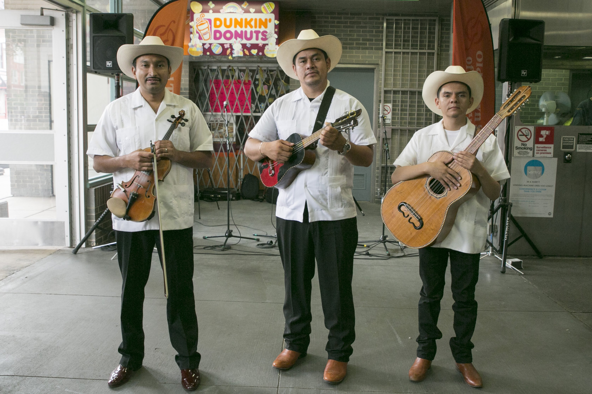
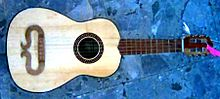
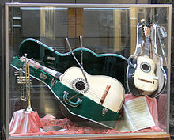

¿Qué es?
El huapango es un genero musical mexicano basado en compás ternario, interpretado en diversas formas,
las más conocidas son tres variantes: el huapango típico o son husteco, interpretado por el trío huasteco;
el huapango norteño,interpretado por conjunto norteño y el huapango de mariachi.

Huapango Huasteco
También se conoce con el término son huasteco. En un principio existía la diferenciación entre los términos, siendo los huapangos las canciones con letra fija
los sones huastecos las piezas para trovar, para echar versos. El conjunto tradicional de huapangueros es llamado trío huasteco, y está formado por un ejecutante de quinta
huapanguera (una guitarra de cinco u ocho cuerdas y cajón de resonancia mayor que el de la guitarra normal), mientras otro ejecuta la jarana huasteca (un cordófono de cinco
cuerdas distinta de la jarana jarocha). Estos dos instrumentos llevan el ritmo y la armonía de la pieza, mientras el violín pauta la melodía. El canto del huapango se ejecuta
generalmente a dos voces, y en ocasiones los cantores se turnan los versos de una copla. En este caso, las formas comunes son que la primera voz cante los primeros dos versos y
la segunda los repita, o bien, le conteste con otros dos versos. Mientras los cantores hacen los versos, el violín guarda silencio y el zapateado es menos impetuoso.

Janara Huasteca
Huapango Norteño
El huapango norteño es una pieza de baile rápida con un compás 6/8. Luis Díaz Santana Garza, en Historia de la música norteña mexicana dice que el huapango norteño fue
un desarrollo de la música de los migrantes potosinos asentados en la ciudad de Monterrey. Un papel importante para la creación de este género fue la influencia de las bandas
militares, las orquestas típicas, los tamborileros y el conjunto de "Los Montañeses del Álamo".

Bajo Sexto Norteño
Huapango de Mariachi
El huapango ha sido incorporado al repertorio de los mariachis, a partir del siglo XX, y de hecho es más conocido fuera de México ejecutado por este conjunto que por
el trío tradicional. En este caso, el huapango es ejecutado con vihuelas, trompetas, guitarrón y violín; el falsete es mucho más alargado que en el huapango tradicional y desaparece
el zapateado como parte del acompañamiento musical. y alternado similar al son jalisciense. Son usadas las tonalidades mayor y menor. Otra característica es el uso de pasajes
rebuscados de violín para las entradas e interludios musicales.

Instrumento Mariachis